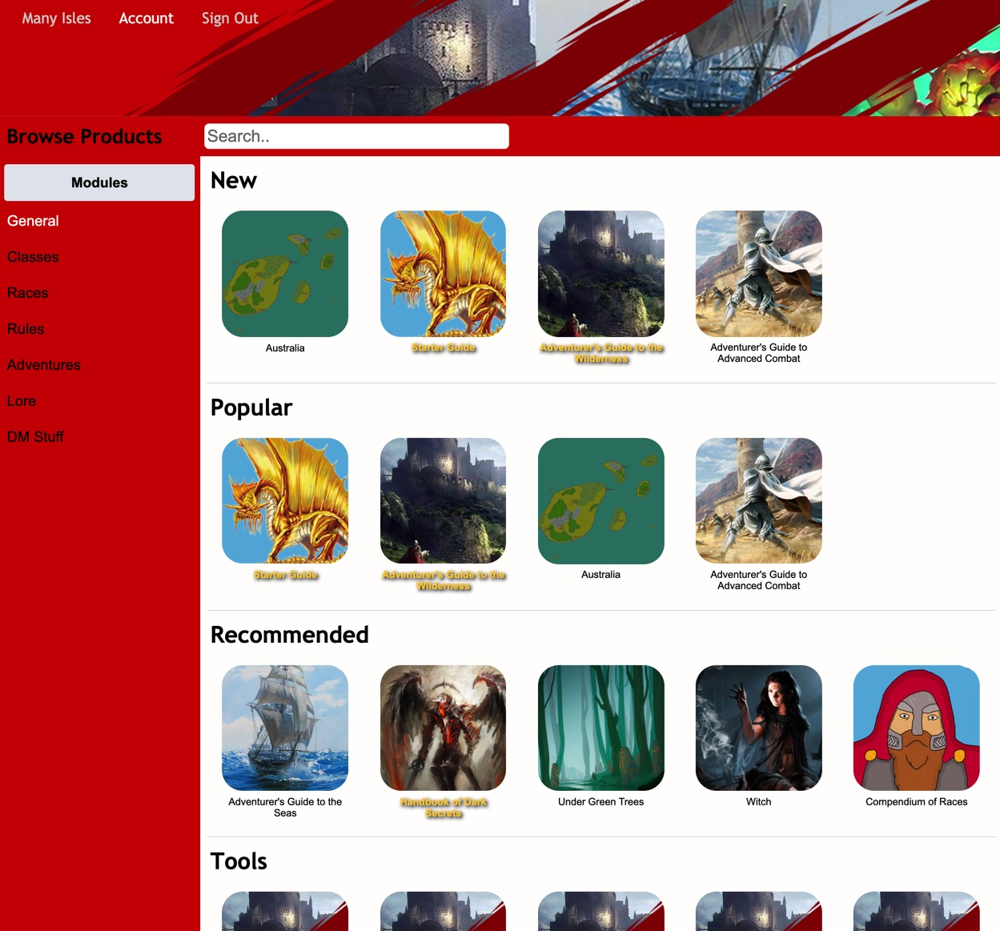

Many Isles Wiki - How To - Digital Library

Digital Library
The core ideology of the Many Isles is creation, and many of the community's great works end in the digital library, a grand assortment of everything one might want.
Digital Library - Publish my Own - Purchase Tier
Using the Digital Library

When you navigate to the library from our homepage to the library (using the "Products" tab), you'll find yourself before the library's homepage.
You'll notice two major divisions: the content block (on white background), where any content is displayed. Around it, you have a number of navigation tools to access and modify the content you see.
Navigation Tools
Top Navigation. Designed for quick access of the most essential things, it contains a link to the homepage, to your account page, and an easy way for you to sign our to gain access to your tiers and download premium content.
Category Search. Input the type of product (module, tool, art...) you want to look for by clicking on the grey box, and which categories you'd like to precise your search, here.
Search Bar. You can add some text here, which will further narrow down your search. To submit your search, press enter whilst this text box is selected.
Footer. We give you some additional resources in the footer, for any other references you might want.
Content Block
This block's content changes depending on what you're looking at at the moment.
Homepage.
Whilst on the homepage, we propose you a number of products. "New" are modules ranked by publishing date; "Popular" are those modules with most views; "Recommended" are the Pantheon's personal choice of modules; "Tools" are tools ranked by publishing date; and "Art" is art ranked by publishing date.
Search Page.
When you hit enter, you find a page before you with one or two groups of up to 20 hits. The first group consists of all products of the fitting type (eg. module), category and title according to your query. If you didn't input any text, this block doesn't appear. The second block consists of all products of fitting type and category.
Product Page.
A single product's page. On load, the category search column on the left is that of the product's type and categories. In the content, you see the product's name, its categories, its publisher (click on their name to see their partnership page), its tier, and a description. Beneath, you can find more products by the same author, and suggestions based on the original's categories.
Partnership Page.
A partnership is the publishing entity in the Many Isles. You can see information about it, as well as their most viewed titles.